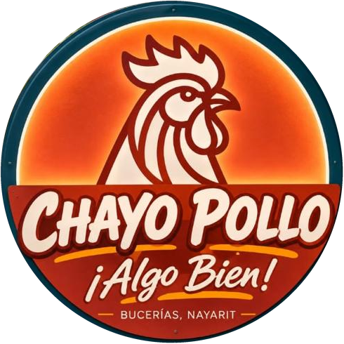

CHAYO POLLO
🍗 Pollos rostizados para llevar
¡El sabor que reúne a la familia!
💬 Pedidos por WhatsApp 📍 Cómo llegar 🍗 Menú📸 Instagram · Próximamente
⭐ Déjanos tu reseña en Google
📘 Síguenos en Facebook

¡El sabor que reúne a la familia!
💬 Pedidos por WhatsApp 📍 Cómo llegar 🍗 Menú